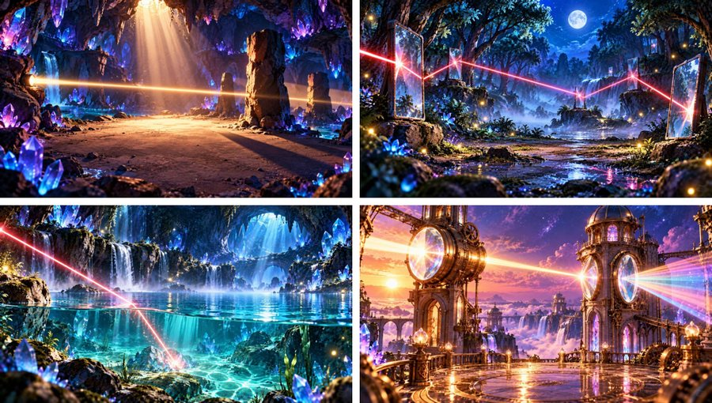
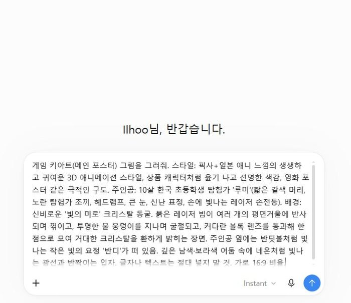
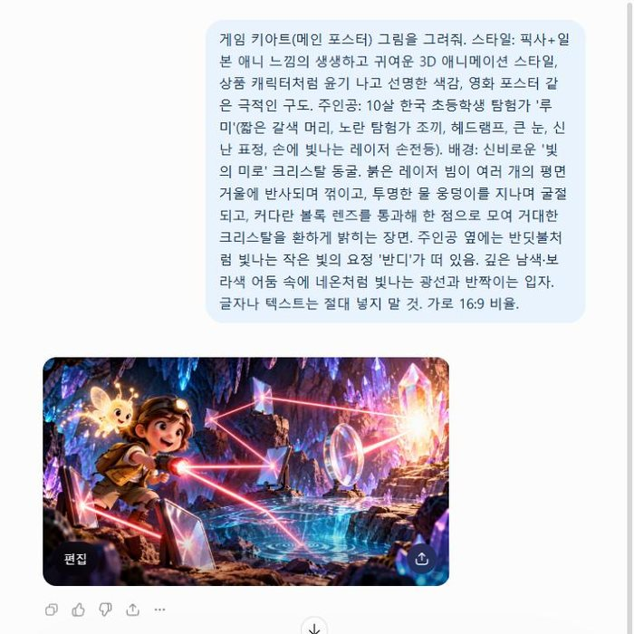
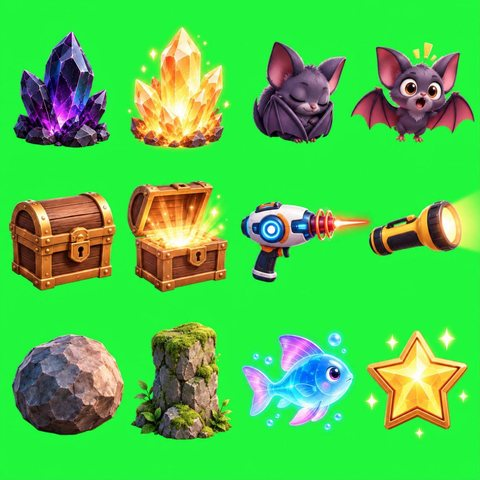
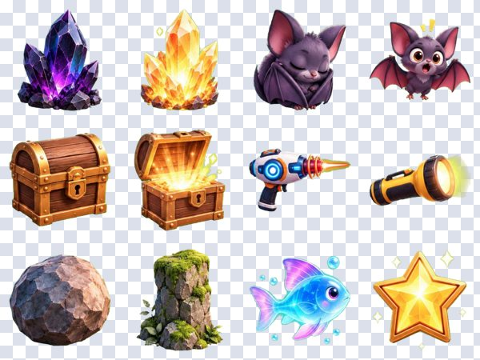

수업 앱의 원칙을 정하고 → 지도서와 성취기준으로 설계하고 → AI와 대화하며 코딩하고 → ChatGPT로 그림을 만들고 → GitHub에 올리는 전 과정을, 그대로 따라 할 수 있게 정리했습니다. 프롬프트는 복사해서 바로 쓰세요.
아이들이 바로 몰입하고, 선생님이 수업에 그대로 쓸 수 있는 앱이 되도록 처음에 정한 원칙이에요. 오른쪽은 빛의 미로에 적용한 방법입니다.
| 원칙 | 왜 필요할까 | 빛의 미로에서는 |
|---|---|---|
| 입장퀴즈 → 게임 | 게임 전에 핵심 개념을 짚고, ‘통과’라는 목표로 동기를 끌어올려요. | 13문항 은행에서 10문항 무작위, 7개 이상 통과 시 입장 + 해설 제공 |
| 앱 = 저장소 1개 | 앱마다 인터넷 주소가 따로 생겨 링크 하나로 수업에 바로 공유해요. | light-maze 저장소 하나에 game·quiz·worksheet·guide 폴더 |
| 살아 있는 캐릭터 그림 | 캐릭터에 정이 들면 아이들이 끝까지 해 봐요. | 키아트·주인공 루미·요정 반디·배경 4장·월드맵·스프라이트 12종 모두 ChatGPT |
| 익숙한 게임 문법 | 규칙을 길게 설명하지 않아도 바로 시작할 수 있어요. | 레이저 퍼즐(거울 놓기) + 월드맵 + 별 3개 + 도감 수집 |
| 교과 연결 표기 | 무엇을 배우는지 아이도 교사도 한눈에 알 수 있어요. | 스테이지마다 성취기준 개념 카드, 지도서 오개념 반영 |
| 설치 없이 한 번에 | 교실 기기가 달라도 웹브라우저만 있으면 열려요. | 터치 드래그·회전 버튼, 태블릿 세로 화면 대응 |
| 과정 공유 | 다른 선생님도 같은 순서로 따라 만들 수 있어요. | 제작 과정 영상 + 이 가이드 + 아카이브(apps.js로 카드 자동 생성) |
2022 개정 과학 5학년 1학기 2. 빛의 성질(성취기준 [6과02-01] [6과02-02] [6과02-03]) 교사용 지도서의 단원 지도 계획을 그대로 게임 흐름으로 옮겼습니다.
| 차시 | 지도서 차시명 (핵심 활동) | 성취기준 | 게임 |
|---|---|---|---|
| 1 | 단원 열기: 손전등으로 빛 도장 만들기 | 6과02-01 | 타이틀·루미 소개 |
| 2 | 물체를 보기 위해서 무엇이 필요할까요? (어둠상자) | 6과02-01 | 1-1 어둠상자 |
| 3 | 빛이 없으면 어떤 점이 불편할까요? | 6과02-01 | 1-1 루미 대사·개념 카드 |
| 4~5 | 빛은 어떻게 나아갈까요? (레이저 직진, 그림자) | 6과02-02 | 1-2 직진, 1-3 그림자 |
| 6 | 빛이 거울에 부딪치면? (반사, 디지털 모의실험) | 6과02-02 | World 2 거울의 숲 + 🧪 가상 실험실 |
| 7 | 공기와 물의 경계에서 빛은? (굴절) | 6과02-02 | 3-1 ~ 3-3 굴절의 호수 |
| 8 | 공기와 렌즈의 경계에서 빛은? (볼록·오목, 디지털 모의실험) | 6과02-02 | 3-4, World 4 렌즈의 탑 |
| 9 | 우리 주변의 거울과 렌즈 (쓰임새 조사) | 6과02-03 | 개념 카드(돋보기·안경·잠망경) |
| 10~11 | 창의가 활짝: 거울이나 렌즈를 이용한 장치 만들기 | 6과02-03 | 2-4 잠망경 + 학습지 장치 설계 |
| 12 | 단원 마무리 | 전체 | 5-1 빛의 미로 탈출 + 수료증 + 입장퀴즈 |
지도서 참고 자료의 오개념 “내 눈에서 빛이 나아가 물체가 보인다”를 1-1에서 정면으로 다룹니다. 손전등을 다른 곳으로 돌리면 보물상자가 사라지고, 빛이 닿아야만 보입니다.
지도서에 “굴절 법칙은 다루지 않는다”고 되어 있어 기본 화면에는 숫자 없이 현상만 보이게 했습니다. 각도 숫자는 🔬 돋보기 모드(선택)에서만 나와 심화 학생용으로 씁니다.

Claude·ChatGPT·Gemini 어느 AI든 같은 순서로 쓰면 됩니다. 한 번에 다 시키지 말고 기획 → 엔진 → 데이터 → 화면 → 퀴즈 → 학습지 순서로 쪼개서 요청하는 것이 핵심입니다.
모든 그림을 한 대화방 안에서 이어서 요청했습니다. 그래야 같은 화풍·같은 캐릭터가 유지됩니다. 첫 요청에 스타일을 자세히 적고, 다음부터는 “앞서와 같은 스타일”이라고만 하면 됩니다.




스타일픽사+일본 애니 3D, 윤기 나는 상품 캐릭터 대상누가·무엇을 장면어떤 과학 현상이 보이게 용도“가운데는 비워 둬”, “초록 배경”, “4×3 격자” 금지“글자 없음” 비율16:9 / 2:3 / 1:1
명령어 없이 웹 화면만으로 할 수 있습니다. 저장소 이름이 곧 주소가 됩니다: https://아이디.github.io/저장소이름/
light-maze → Public 선택 → Create repository.light-maze 폴더 안의 파일과 폴더(index.html, css, js, assets, quiz, worksheet, guide)를 전부 끌어다 놓기 → 아래 Commit changes. 웹 업로드는 파일 하나당 25MB, 한 번에 100개까지예요.(넘으면 폴더를 나눠서 두 번 올리기)https://hongdonedu.github.io/light-maze/vibe-archive 저장소를 만들어 아카이브 폴더 안의 파일을 올리고 Pages를 켭니다. 두 저장소가 같은 계정에 있으면 아카이브의 ‘프로그램 시작’ 버튼이 빛의 미로로 바로 연결됩니다.index.html이어야 주소만으로 열립니다. 윈도우는 확장자를 숨겨서 index.html.html처럼 저장되는 실수가 잦아요. 탐색기 보기 → 파일 확장명을 켜고 확인하세요.cd light-maze git init git add . git commit -m "빛의 미로 첫 배포" git branch -M main git remote add origin https://github.com/아이디/light-maze.git git push -u origin main # 이후 수정할 때는 git add . && git commit -m "3-3 스테이지 난이도 조정" && git push
아카이브의 data/apps.js에 카드 한 개를 추가하면 홈페이지에 자동으로 나타납니다.
{
"id": "my-new-app", "title": "새 앱 이름", "category": "science", // science · math · etc · class(학급 경영) · training
"subject": "과학 6학년 2학기 · 전기의 이용",
"desc": "한두 문장 소개",
"url": "https://아이디.github.io/my-new-app/",
"quizUrl": "", "worksheetUrl": "", "img": "assets/thumb_my-new-app.jpg", "tags": ["게임"]
},
입장퀴즈로 지난 시간 복습. 7문제 통과한 학생부터 게임 입장 — 자연스럽게 개념 점검이 됩니다.
그 차시에 해당하는 월드만 열어서 플레이. 활동지 ‘스테이지 탐구 기록표’에 부품 배치와 발견한 성질을 적게 합니다.
얻은 개념 카드를 짝과 설명하기. 🔬 돋보기 모드로 입사각=반사각을 함께 확인(심화).
| 차시 | 추천 스테이지 | 활용 포인트 |
|---|---|---|
| 2~3차시 | 1-1 | 실제 어둠상자 실험 후 “손전등을 끄면?”을 게임으로 다시 확인 |
| 4~5차시 | 1-2, 1-3 | 레이저 직진 실험 뒤 그림자 크기 조절을 게임으로 |
| 6차시 | 2-1 ~ 2-3, 가상 실험실 | 지도서의 ‘디지털 도구 모의실험’ 활동으로 그대로 사용 |
| 7~8차시 | 3-1 ~ 3-4, 4-1 ~ 4-3 | 레이저 보안경이 부족할 때 대체·보충 활동 |
| 10~11차시 | 2-4 잠망경 | 종이 잠망경 만들기 전에 원리 체험 → 활동지에 장치 설계 |
| 12차시 | 5-1, 수료증 | 단원 마무리 + 입장퀴즈를 형성평가로 |
2022를 넣으면 입장퀴즈 없이 모든 스테이지가 열립니다(시연·특정 차시 수업용). 진행 상황은 각 기기 브라우저에 저장됩니다.